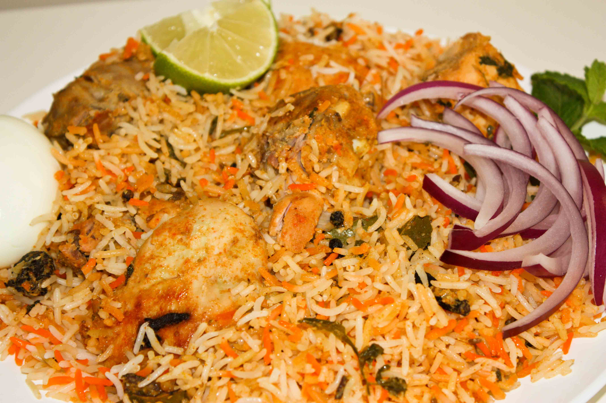
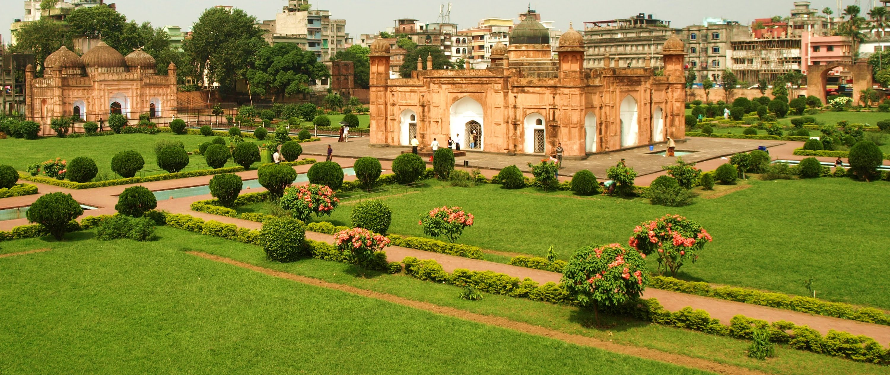

You'll find warmth you've been looking for all your life when you come here.
Specialities of DHAKA
1 / 6
Ahsan Monjil
2 / 6

Biryani of Old town
3 / 6

Lalbagh
4 / 6
Sonargaon City
5 / 6
Ramna Park
6 / 6
Suhrawardy Udyan
With Dhaka's colorful history and rich cultural traditions, it is known the world over as the city of mosques and muslin. Its fame attracted travelers from far and near throughout the ages.
Foods that you should not miss in Dhaka
1. Morog-polao of Nanna Biriani: Best morog-polao at Bangladesh. Morog-polao is a very special food of Bangladesh, specially served at marriage ceremonies or any other big family festivals. "Morog" is chicken, and “polao” is rice cooked in a special way. Morog-polao is specially cooked rice with large portion of chicken, served with a special drink named “borhani”. A very testy and famous food of Bangladesh.
Location: "Nanna Biriani" is a famous restaurant located at old Dhaka. They have four branches there. But to taste the best morog-polao, you have to go to their main branch which is located near "Tara Masjid". It’s a very famous mosque of Dhaka. Take a rickshaw from any place at old Dhaka and go to Tara Masjid. Ask someone about the restaurent – they'll show you.
2. Vuna Khichuri of Ghoroa Restaurent: Vuna khichuri is another famous food of Bangladesh. It is made of rice, dal, and meat – chicken or beef. Rice is cooked dry with dal in a special way, and meat is added with it. This is a very delicious food of Bangladesh. You'll find the best Vuna Khichuri in Dhaka at Ghoroa Restaurent.
Location: Ghoroa restaurent is located in the business heart of the city – Motijheel. From any place at Motijheel, take a rickshaw to Modhumita Cinema Hall. The restaurent is loctated in the same road.
3. Kacci Biriani of Sunami Restora: Biriani is the king of every food of Bangladesh. In every big occation in any family, this is a must have food. It is make of specially cooked rice and mutton. If you come to Dhaka and do not taste Biriani from any of the famous restaurent, you'll miss half of the food culture of Bangladesh. Sunami Restora serves one of the most tasty Biriany of Dhaka.
Location: Sunami Restora is located at Jhigatola Bus Stand at Dhanmondi. In the bus stand, ask someone about the restaurent – they'll show you.
A ride from Motijheel to Uttara
Attractions of Dhaka
Mosques : Dhaka has several hundred mosques. Prominent are Baitull Mukarram-National Mosque, the seven Domed Mosque (17th century), Star Mosque (18th century) , Chawkbazar Mosque and Huseni Dalan Mosque.
Hindu Temples : Dhakeshwari Temple (11th Century), Ramkrishna Mission.
Churches: Armenian Church (1781 A.D.) St. Mary's Cathedral at Ramna, Church of Bangladesh or former Holy Rosary Church (1677A.D.) at Tejgaon.
National Memorial : It locates at Savar, 35, km. from Dhaka city. The memorial designed by architect Moinul Hossain is dedicated to the sacred memory of the millions of unknown martyrs of the war of liberation.
Lalbagh Fort : It was built in 1678 A.D. by Prince Mohammad Azam, son of Mughal emperor Aurangazeb. The fort was the scene of bloody battle during the first war of independence (1857) when 260 sepoys stationed here backed by the people revolted against British forces. Outstanding among the monuments of the Lalbagh are the tomb of Pari Bibi , Lalbagh Mosque, Audience Hall and Hammam of Nawab Shaista Khan now housing a museum.
1857 Memorial : ( Bahadur Shah Park) Built to commemorate the martyrs of the first liberation war (1857-59) against British rule. It was here that the revolting sepoys and their civil compatriots were publicly hanged.
Bangabandhu Memorial Museum : The residence of the father of the nation Bangabandhu Sheikh Mujibur Rahman at Dhanmondi has been turned into a musuam. It contains rare collection of personal effects and photographs of his lifetime.
Mukti Juddha Museum : Situated at Segun Bagicha area of the city the museum contains rare photographs of Liberation war and items used by the freedom fighters during the period.
Ahsan Manzil Museum : On the bank of the river Buriganga in Dhaka the pink majestic Ahsan Manzil has been renovated and turned into a museum recently. It is an example of the nations rich cultural heritage. It was the home of the Nawab of Dhaka and a silent spectator to many events. The renovated Ahsan Manzil is a monument of immense historical beauty. It has 31 rooms with a huge dome atop which can be seen from miles around. It now has 23 galleries displaying portraits, furniture and household articles and utensils used by the Nawab.
Curzon Hall : Beautiful architectural building named after Lord Curzon. It now houses the Science Faculty of Dhaka University.
Old High Court Building : Originally built as the residence of the British Governor, it illustrates a happy blend of European and Mughal architecture.
Dhaka Zoo : Popularly known as Mirpur Zoo. Colorful and attractive collections of different local and foreign species of animals and birds including the majestic Royal Bengal Tiger are available here.
National Museum : Located at the central point of the city, the museum contains a large number of interesting collections including sculptures and paintings of the Hindu, Buddhist and Muslim periods.
Botanical Garden : Built on an area of 205 acres of land at Mirpur and adjacent to Dhaka Zoo. One can have a look at the zoo and the botanical garden in one trip.
National Park : Situated at Rejendrapur, 40 km. north of Dhaka city , this is a vast (1,600 acres) national recreational forest with facilities for picnic and rowing etc.
Central Shahid Minar : Symbol of Bengali nationalism. This monument was built to commemorate the martyrs of the historic Language movement of 1952. Hundreds and thousands of people with floral wreaths and bouquet gather on 21 February every year to pay respect in a solemn atmosphere. Celebrations begin at zero hour of midnight.
National Poet's Graveyard : Revolutionary poet Kazi Nazrul Islam died on the 29 August 1976 and was buried here. The graveyard is adjacent to the Dhaka University Mosque.
Suhrawardy Uddyan (Garden) : A Popular Park. The oath of independence of Bangladesh was taken here and Father of the Nation Bangabandhu Sheik Mujibur Rahman gave clarion call for independence on this occasion on the 7th March 1971. The place is famous for its lush verdure and gentle breezes. Eternal Flame to enliven the memory of the martyrs of our Liberation war has been blown here recently.
Mausoleum of National Leaders : Located at the southwestern corner of Suhrawardy Uddyan, it is the eternal resting place of great national leaders, Sher-e-Bangla A.K. Fazlul Haque, Hossain Shahid Suhrawardy and Khaja Nazimuddin.
Banga Bhaban : The official residence of the President, located in the city . One can have an outside view of this grand palace.
Baldha Garden : Unique creation of the late Narendra Narayan Roy, the landlord of Baldha. Year of establishment was 1904. Located in Wari area of Dhaka city, the garden with its rich collection of indigenous and exotic plants is one of the most exciting attraction for naturalists and tourists.
Ramna Green: A vast stretch of green garden surrounded by a serpentine lake near the Sheraton Hotel.
Parliament House : Jatiya Sangsad Bhaban (Parliament House) located at Sher-e-Bangla Nagar has distinctive architectural features. Designed by the famous architect Louis I. Kahn, it may be called an architectural wonder of this region.
Science Museum : The museum is a modern learning center related to the latest scientific discoveries. It is situated at Agargaon.
Institute of Arts and Crafts : Situated in the picturesque surroundings of Shahbagh the Institute of Arts and Crafts has a representative collection of folk-art and paintings by artists of Bangladesh.
Sonargaon : About 29 km. from Dhaka. Sonargaon is one of the oldest capitals of Bangal. A Folk Arts and Crafts Museum has been established here.
Other attractions in and around Dhaka include the Institute of Arts and Crafts with its representative collection of folk art and paintings, handicraft shops. Aparajeya Bangla monument, picnic spots at Chandra and Salna, industrial estates of Tongi, Narayanganj, Demara, Tejgaon, cruising by country boat in the nearby river or a visit to a village to see jute cultivation, weaving and pottery making. Last but not the least travel by a horse driven cart or rickshaw along busy Dhaka streets is a rewarding experience.
Picnic Spots : There are good picnic spots in the area around Savar and Mirzapur. Other beauty spots connected by road with Dhaka include Joydevpur, Sripur, Madhupur, Rajendrapur National Park, Chandra and Salna, all of which have rest-houses that can be used by tourists on request to the Forest Department.
Bangaldesh Parjatan Corporation owns two picnic spots with Bunglows at Chandra and Salna which can also be hired by tourists.
Sightseeing Tours : Bangladesh Parjatan Corporation runs conducted sightseeing tours from its Tourist Information Centre at Dhaka Sheraton Hotel. The duration of the Dhaka City sightseeing tours is three hours approximately. The Corporation operates a number of other interesting sightseeing tours around the Dhaka City (Ph: 8119192). For the transit passengers the Corporation also runs special city sightseeing tours from from the Tourist Information Centre, Zia International Airport, Ph: 880-2-8914416.